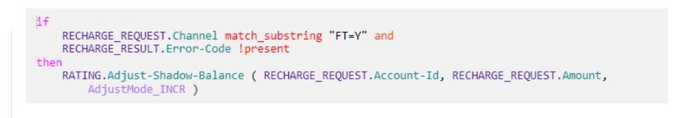

Note:
Note:Shadow balance can be administered through provisioning API. It can be increased or decreased during call processing. It is also reported in the generated CDR and EDR.
Configuring the shadow balance
The services/ServiceManager/subscriber/create/Profile API is used to set the shadow balance during subscriber profile creation. The shadowBalance parameter specifies the shadow balance quota within the main balance.
The services/ServiceManager/subscriber/update/adjustbalance/Account API with adjustMode parameter as SET is used to set the shadow balance independently from the main prepaid balance.
- STDBAL: to set the standard balance. This is the default value of balanceType.
- SHBAL: to set the shadow balance.
The services/ServiceManager/subscriber/getData/Account API (both GET and POST) can be used to get the current shadow balance when detailed account information is required (that is, when detailedQuery set as true). If the current shadow balance is configured as null, then it is omitted from response.
Note:EDR tags shadowBalanceBefore and shadowBalanceAfter specify the shadow balance before and after the operation respectively.
If the shadow balance is configured using services/ServiceManager/subscriber/create/Profile API, and it is not provided in the input, then shadowBalanceBefore tag value is 0. In this case, shadowBalanceBefore tag is omitted from the EDR.
If the shadow balance is configured using services/ServiceManager/subscriber/update/adjustbalance/Account API, then the shadowBalanceBefore tag reports 0 in case shadowBalanceAfter EDR tag is not null. Else, both tags are omitted from the EDR.
- Shadow balance is set to a negative value.
- Shadow balance larger than 0 but the main balance is negative.
- Shadow balance is larger than the current main balance.
- Main balance is smaller than current shadow balance.
- Main balance is negative and the current shadow balance is not 0.
Increasing the shadow balance
- PRE_RECHARGE trigger

- POST_RECHARGE trigger: RATING.Adjust-Shadow-Balance is used to
increase the shadow balance. It is applicable only in case of successful
increase in prepaid balance.
Note:The shadow balance values before and after the increase are reported in the shadowBalanceBefore and shadowBalanceAfter EDR tags. If the shadow balance was null before the increase, then shadowBalanceBefore value is always 0.
Shadow balance values before and after the increase are reported in the response. In case the shadow balance was null before the increase, then the value of shadow balance before the increase is reported as 0 in the response.
Decreasing the shadow balance
Note:If the shadow balance is configured as null before the decrease, then it cannot be not decreased.
The shadow balance values before and after the decrease are reported in the shadowBalanceBefore and shadowBalanceAfter EDR tags. shadowBalanceBefore and shadowBalanceAfter EDR tags are omitted when shadow balance before the decrease is null.
- Traffic charge (including e-Commerce usage through REST API).
- Fee deduction (BOU fee and step-up fee).
Shadow balance usage and its value after charging are reported in following CDR tags:
- shadowBalanceCommitted : Shadow balance used for charging.
- accountInfo/shadowBalanceAfter: Shadow balance remaining after charging.
- bouFeeShadowBalanceCommitted : Shadow balance used for BOU fee deduction.
- bouFeeShadowBalanceAfter : Shadow balance remaining after BOU fee deduction.
- stepUpFeeShadowBalanceCommitted : Shadow balance used for step-up fee deduction.
- stepUpFeeShadowBalanceAfter : Shadow balance remaining after stepUp fee deduction
Note: